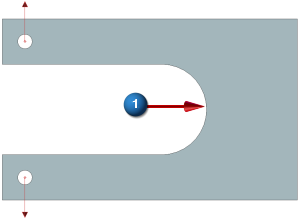
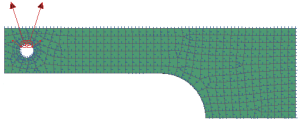
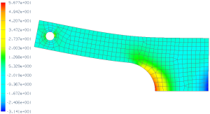
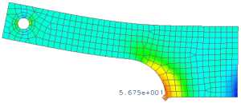

Geometry idealization project
A variety of tools to create idealized geometry are available in Advanced Simulation. The following exercise demonstrates two such tools.
Objective
A U-shaped bracket is shown below. To idealize the geometry, you will:
-
Split the body to create a symmetric representation of the bracket.
-
Create a midsurface of the symmetric representation of the bracket.
Using the SOL 101 Linear Statics - Global Constraints solution sequence, perform a structural analysis on the idealized geometry to determine the tensile stress at  .
.

Required data
|
Property |
Value |
|
Part |
U_bracket.prt |
|
Solution sequence |
SOL 101 Linear Statics - Global Constraints |
|
Idealization |
Utilize symmetry Create midsurface |
|
Material |
Steel |
|
Physical Property |
2D element family Thin shell collector type Default thickness 4 mm |
|
Mesh |
CQUAD8 Element size 4 mm |
|
Constraints |
See note regarding constraints |
|
Loads |
Apply a 500 N bearing load as indicated |

Notes
A summary of the steps to complete the analysis is listed below.
-
Open the part file and start Advanced Simulation. Create new FEM and Simulation files.
-
Make the idealized part the displayed part.
-
Perform geometry idealization on the bracket.
-
Use the Promote command to promote the body.
-
Use the Split Body command to split the body along the plane of symmetry.
-
Use the Midsurface by Face Pairs command to create a midsurface representation of one of the bodies created in the previous step.
For a detailed description of how to complete this step, see the Mesh a midsurface activity.
-
-
Make the FEM file the displayed part.
-
Turn off unused polygon bodies. In the Simulation Navigator, expand the Polygon Geometry node and clear the unused polygon bodies so that only the midsurface is visible.
-
Define the material and the physical properties and create a 2D thin shell mesh collector.
For a detailed description of how to complete this step, see the Define mesh properties with mesh collectors activity.
-
Create a CQUAD8 paver mesh with a 4 mm element size. Assign the mesh to the mesh collector created in the previous step.
-
Make the Simulation the displayed part.
-
Use the User Defined Constraint command to constrain the model along the edge of symmetry.
-
Fix one node on the edge of symmetry in all six DOF.
-
Constrain all the other nodes on the edge of symmetry from translating in the Y-direction and rotating about the X- and Z-axes.
Degree of Freedom (DOF)
Deformation
DOF1
Translation in the X-direction
DOF2
Translation in the Y-direction
DOF3
Translation in the Z-direction
DOF4
Rotation about the X-axis
DOF5
Rotation about the Y-axis
DOF6
Rotation about the Z-axis
-
-
Use the Bearing command to apply the 500 N force.
-
Solve the model.
Expected Results
To access the analysis results, in the Simulation Navigator, double-click Results.
The tensile stress at  is the normal stress in the Y-direction. To view a contour plot of this stress, in the Post Processing Navigator, expand Solution 1. Next, expand Stress - Element-Nodal and double-click YY. The resulting contour plot (in MPa) should look similar to the one shown below.
is the normal stress in the Y-direction. To view a contour plot of this stress, in the Post Processing Navigator, expand Solution 1. Next, expand Stress - Element-Nodal and double-click YY. The resulting contour plot (in MPa) should look similar to the one shown below.

Use the Identify Results command to obtain the numerical value for the tensile stress at the point of interest. The result (in MPa) is shown below.

Completed project
For your reference, a completed model for this project is located in the ..\projects\solved_project_models folder.